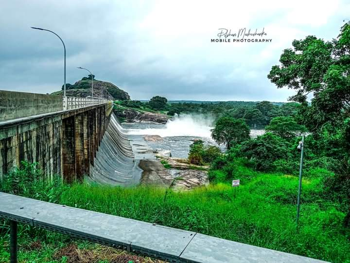

රාජාංගනය ගැන තොරතුරු
රාජාංගනය යනු ශ්රී ලංකාවේ උතුරු මැද සහ වයඹ පළාත් මායිම ආශ්රිතව, කලා ඔය හරස් කර ඉදිකරන ලද විශාල ජලාශය සහ ඒ වටා ගොඩනැගුණු සශ්රීක ජනපද ප්රදේශයයි. කෘෂිකර්මාන්තය, මිරිදිය ධීවර කර්මාන්තය සහ නිස්කලංක පරිසරය නිසා මෙම ප්රදේශයට සුවිශේෂී වටිනාකමක් හිමි වේ.
වාරිමාර්ග හා කෘෂිකර්මය
අවට ගොවිබිම් විශාල ප්රමාණයකට වාරි ජලය සපයන රාජාංගනය ජලාශය, ප්රදේශයේ වී වගාව සහ ගොවි ජන ජීවිතයේ ප්රධාන ජීවනාලිය ලෙස ක්රියා කරයි.
පරිසරය හා සුන්දරත්වය
වැව් තාවුල්ල, හරිත වන පෙත, කුරුල්ලන් සහ සැඳෑ හිරු බැස යන දසුන් ඡායාරූපකරණයට සහ සොබාදහම විඳීමට ඉතාම සුදුසු පරිසරයක් නිර්මාණය කරයි.
පිහිටීම හා ප්රවේශය
තඹුත්තේගම සහ සිරිමාපුර ඇතුළු අවට නගර සමඟ සම්බන්ධ වන මාර්ග ඔස්සේ රාජාංගනය ප්රදේශයට පහසුවෙන් ළඟා විය හැකිය.
රාජාංගනය ඡායාරූප එකතුව



වැඩිදුර විස්තර සඳහා
රාජාංගනය පිළිබඳ වැඩිදුර තොරතුරු දැනගැනීමට හෝ අප හා සම්බන්ධ වීමට පහත WhatsApp බොත්තම ඔබන්න.
WhatsApp පණිවිඩයක් යවන්න